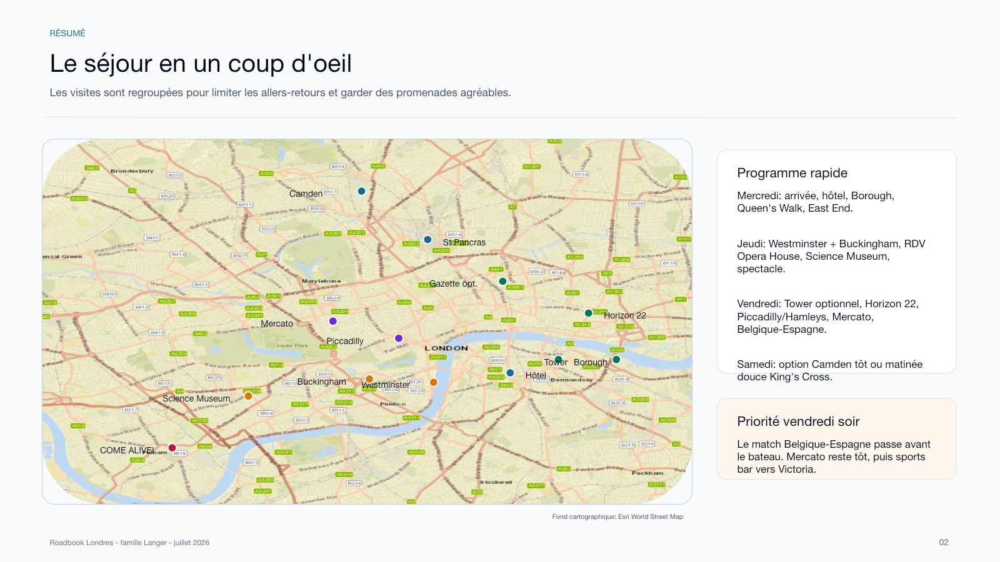
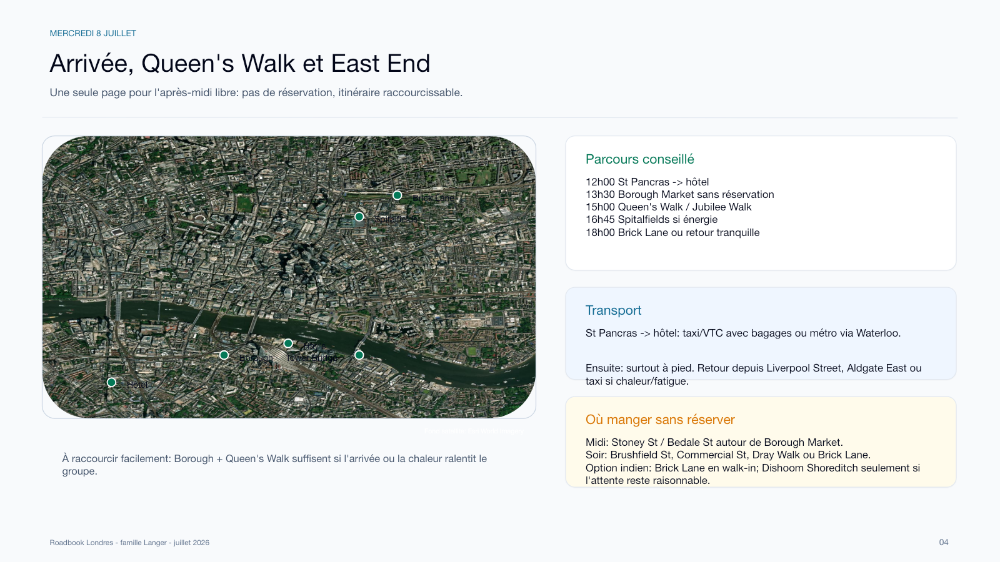
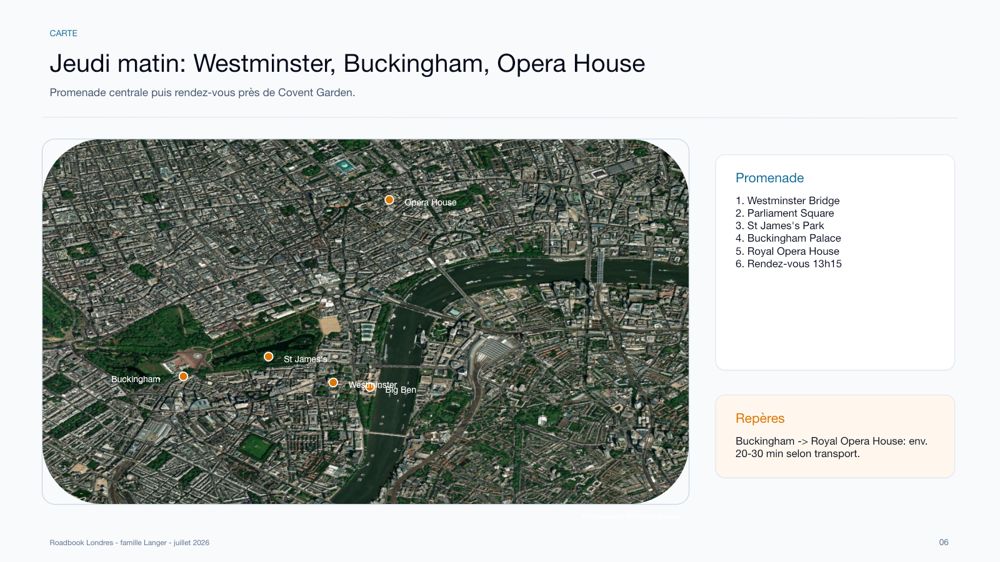
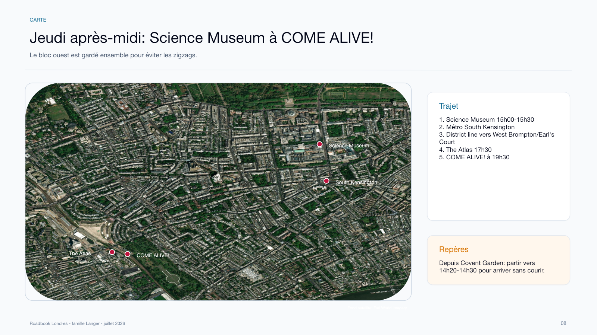
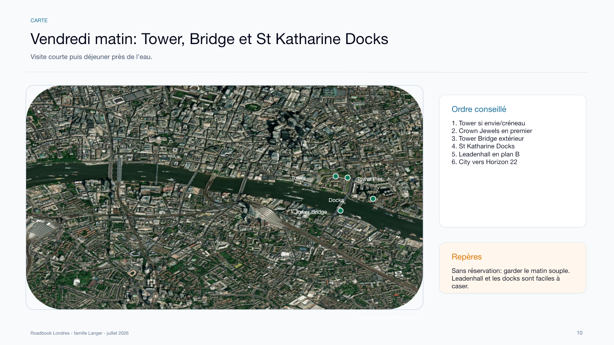
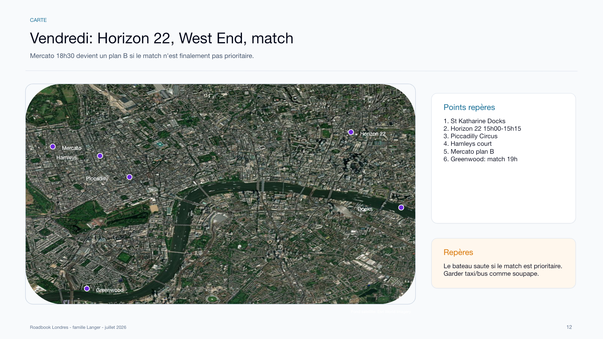
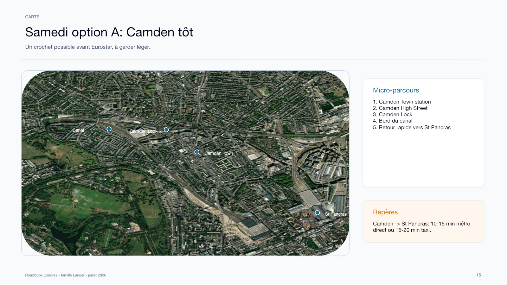
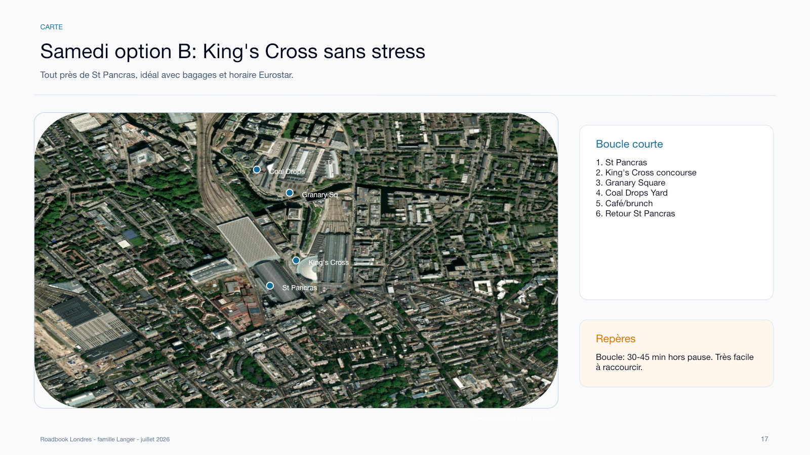

Vendredi 19:00 Londres
Quart Belgique-Espagne. Greenwood confirme pour 18:45-21:45.
Voir vendredi soirFamille Langer
8-11 juillet 2026 · Yves, Jessica, Zoe, Erin et Max
Version mobile
Le match Belgique-Espagne prime vendredi soir. Greenwood est confirme et Mercato Mayfair est annule.
Quart Belgique-Espagne. Greenwood confirme pour 18:45-21:45.
Voir vendredi soirScience 15:00, Atlas 17:30, spectacle 19:30.
Voir jeudi apres-midiArrivee 15:00-15:15. Billet a retrouver dans vos emails.
Voir billetCarte generale

Programme
Chaque bloc part du point logique precedent : hotel le matin, quartier du lunch ou de la derniere activite l'apres-midi.
Mercredi 8 juillet · apres-midi
Objectif : poser les affaires, profiter de la Tamise, puis garder Spitalfields/Brick Lane comme promenade flexible.
Eurostar depuis Bruxelles. Prevoir un trajet simple vers l'hotel.
Tube Northern line depuis King's Cross St Pancras vers Elephant & Castle, puis 12-15 min a pied. Alternative taxi si chaleur/fatigue.
Borough Market et rues voisines : Stoney Street, Bedale Street, Southwark Street. Beaucoup d'options debout ou rapides.
Promenade le long de la Tamise : Southwark Cathedral, London Bridge, vues vers Tower Bridge.
Old Spitalfields Market + Brick Lane si l'energie est bonne. Sinon retour hotel et diner proche.
Borough : Bread Ahead, Padella si file raisonnable, Kappacasein, Comptoir Gourmand, pubs autour de Stoney Street.
East End : Dishoom Shoreditch reserve souvent utile, sinon curry houses de Brick Lane en mode walk-in.
Si la chaleur tape fort : Borough Market + Queen's Walk suffisent. Garder Spitalfields pour un autre voyage n'abime pas le planning.

Jeudi 9 juillet · matin
Une promenade tres londonienne, puis rendez-vous a Covent Garden/Royal Opera House.
A pied vers Southwark ou Waterloo, puis Tube vers Westminster. Alternative : bus si vous voulez rester en surface.
Photos cote Westminster Bridge, puis Parliament Square.
Traverser le parc jusqu'a Buckingham Palace. Ombre et pauses possibles.
Passage photos, sans chercher a tout caler autour de la releve.
Royal Opera House Cafe pour lunch leger ou cafe avant le rendez-vous.
Point de rencontre clair : devant le Royal Opera House, Bow Street. Fenetre libre jusqu'a 16:15 cote amie, mais vous partez avant pour le Science Museum.
Option rapide : Jubilee line depuis Southwark/Waterloo vers Westminster. Pour Covent Garden, marche via St James's, The Mall, Trafalgar Square et Strand.
Royal Opera House Cafe : pratique pour le rendez-vous. Pas besoin de reservation pour un cafe/lunch leger, mais verifier sur place s'il y a de l'attente.

Jeudi 9 juillet · apres-midi et soir
Jour le plus cale du sejour. Le timing fonctionne, mais il faut rester leger au musee et partir sans trainer.
Tube Piccadilly line depuis Covent Garden vers South Kensington. Compter 25-35 min porte a porte.
Creneau d'entree 15:00-15:30. Billets a retrouver dans vos emails.
South Kensington vers West Brompton/Earl's Court, puis marche courte. Compter 25-35 min.
Reservation terrasse pour 5 jusqu'a 19:45. En pratique, viser un repas simple et depart vers 18:55-19:00.
Empress Museum, Empress Place SW6 1TT. Arriver vers 19:00. Si pre-show disponible, arriver plutot 18:45.
The Atlas Fulham, 16 Seagrave Road, SW6 1RX. Jeudi 9 juillet, 17:30-19:45, 5 personnes, terrasse.
Le spectacle est juste apres le diner. Commander vite, demander l'addition tot, et partir a pied vers Empress Museum.

Vendredi 10 juillet · matin
Decision sur place : entrer vite pour les bijoux de la Couronne, ou garder le quartier en promenade et shopping.
Tube/bus vers Tower Hill ou London Bridge. Compter 25-35 min selon option.
Si vous entrez : priorite aux Crown Jewels, puis sortie. Risque de billets complets faible a modere, mais les files peuvent etre longues.
Tower Bridge exterieur, St Katharine Docks, Leadenhall Market. Plus leger et gratuit.
Emilia's est complet. Options : Cote St Katharine Docks, The Dickens Inn, ou food options autour de Leadenhall.
Marche City courte depuis Leadenhall/Tower. Viser arrivee 14:50.
Leadenhall Market est le plus joli. Pour du shopping plus classique, gardez plutot Regent Street/Hamleys apres Horizon.
Option sympa : London Bridge City Pier ou Tower Pier vers Westminster/Embankment si vous voulez une pause en surface. C'est plus lent que le Tube, mais agreable par beau temps.

Vendredi 10 juillet · apres-midi et soir
Le match demarre a 19:00 a Londres. Greenwood est confirme et Mercato Mayfair est annule.
Creneau 15:00-15:15, 2 adultes + 3 enfants. Billets a retrouver dans vos emails.
Tube Central/Piccadilly selon trajet. Passage photos Piccadilly, puis Hamleys Regent Street.
Reservation pour 5 de 18:45 a 21:45, Live Sport - Other. Demande speciale envoyee pour une table avec bonne vue sur Espagne-Belgique.
L'ancienne reservation Mercato / BeBeMe Crypt est annulee. Le vendredi soir est donc entierement cale autour de Greenwood et du match.
Le pub a confirme la demande de table avec bonne vue sur le match. Garder tout de meme un peu de marge a l'arrivee pour se placer calmement.
Belushi's London Bridge reste un plan B uniquement si Greenwood annonce finalement une mauvaise visibilite.
Voir Belushi's
Samedi 11 juillet · matin
Retour Eurostar a 12:04 depuis St Pancras. Viser St Pancras vers 10:45 au plus tard, surtout en famille.
08:15 depart hotel. 09:00 Camden Market / Regent's Canal. 10:20 depart vers St Pancras. Belle option si tout le monde est pret vite.

09:15 depart hotel. Bagages a St Pancras, puis Granary Square / Coal Drops Yard si marge. Moins spectaculaire, beaucoup plus serein.

Eurostar conseille une arrivee a 10:49 pour le train de 12:04.
London St Pancras -> Bruxelles-Midi, arrivee 15:05 heure Bruxelles.
Reservations
Aller : mercredi 8 juillet, Bruxelles-Midi 10:56 -> Londres St Pancras 11:57. Arrivee conseillee Bruxelles 10:06.
Retour : samedi 11 juillet, Londres 12:04 -> Bruxelles 15:05. Arrivee conseillee St Pancras 10:49.
Billets et references a retrouver dans l'email Eurostar ou dans la version locale complete.
Jeudi 9 juillet, entree 15:00-15:30. 5 billets. QR code a retrouver dans vos emails ou dans la version locale complete.
ItineraireJeudi 9 juillet, 17:30-19:45, 5 personnes, terrasse.
Tel : 020 7385 9129
ItineraireJeudi 9 juillet, spectacle 19:30. Empress Museum, Empress Place SW6 1TT. 5 tickets.
Arrivee conseillee : 19:00, ou 18:45 si vous voulez profiter du pre-show.
ItineraireVendredi 10 juillet, arrivee 15:00-15:15. 2 adultes + 3 enfants. QR code a retrouver dans vos emails ou dans la version locale complete.
ItineraireVendredi 10 juillet, 18:30, 5 personnes, BeBeMe Wine Shop (Crypt).
Annule. Plus aucune action necessaire pour ce diner.
Vendredi 10 juillet, coup d'envoi 19:00 a Londres. Greenwood confirme pour 5 personnes, 18:45-21:45.
Tel Greenwood : 020 3058 1000
Itineraire GreenwoodA faire
Le match commence a 19:00 heure de Londres. Un diner classique a 18:30 loin d'un ecran est trop risque. Le meilleur plan est de transformer le vendredi soir en "pub sportif + repas".
Conseils pratiques
Le plus simple : carte bancaire/contactless ou Apple Pay, une carte/appareil par personne. Pour Erin et Max, une Oyster avec Young Visitor Discount peut etre interessante si vous en prenez une sur place.
Le Tube sera le plus efficace. Les bus et l'Uber Boat sont a utiliser quand le trajet est aussi une balade.
Option la plus logique : vendredi autour de Tower/London Bridge, par exemple Tower Pier ou London Bridge City Pier vers Westminster/Embankment. A faire seulement si vous acceptez un trajet plus lent mais plus joli.
Londres est a -1 h par rapport a Bruxelles/Paris. Les billets Eurostar et reservations locales indiquent les heures locales. Le match Belgique-Espagne : 20:00 Bruxelles/Paris = 19:00 Londres.